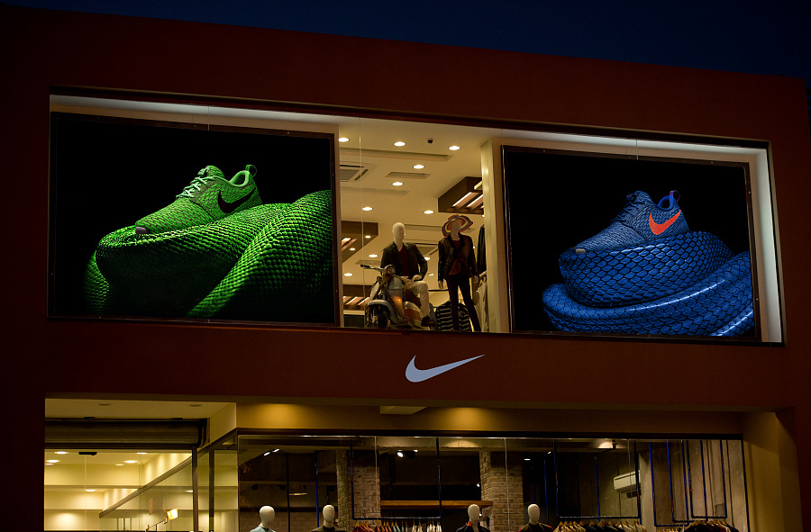
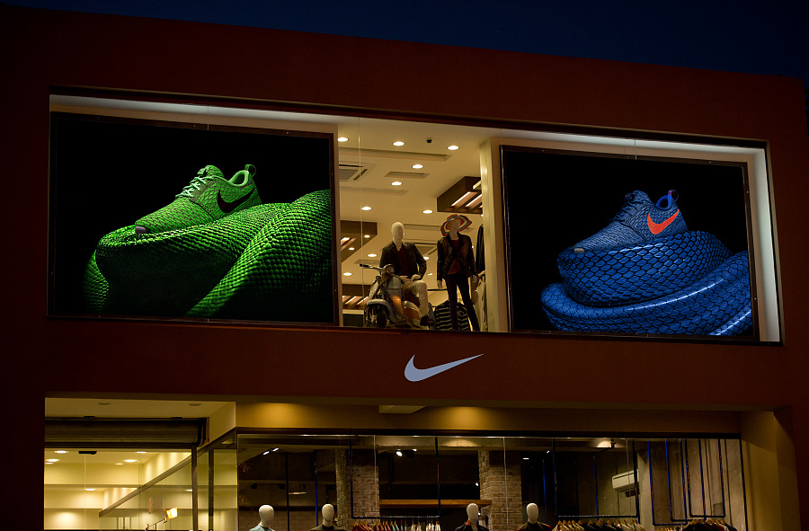

UI设置是什么？在几年前这个概念还没有被炒起来，这个职业是不被广大群众所认识的，他更多属于工业上的定位，侧重于交互设计，这一方面归因于整体社会环境的技术水平，屏幕的分辨率低、电子设备的普及率不高，研发的中心偏向于功能的开发。另一方面这是受整体社会的要求和诉求的购买力影响，社会环境，也依然有许多暧昧人士制作了许多美化的主题，背景壁纸。只不过那个时候她们并没有"UI设计师"这个头衔，做的也多是免费的工作，一切的一切都仅仅是处于对美的追求！
图形用户界面是一种人与计算机通信的界面显示格式，允许用户使用鼠标等输入设备操控屏幕上的图标或菜单选项，以选择命令，调用文件，启动程序或者执行其他一些日常任务。与通过键盘输入文本或字符命令来完成例行任务的字符界面相比，图形用户界面有许多优点。 图形用户界面由窗口、下拉菜单、对话框及相应的控制机制构成，在各种新式应用程序中都是标准化的，即相同的操作总是以同样的方式来完成，在图形用户界面，用户看到和操作的都是图形对象，应用的是计算机图形学的技术 GUI 即人机交互图形化用户界面设计。纵观国际相关产业在图形化用户界面设计方面的发展现状，许多国际知名公司早已意识到 GUI 在产品方面产生的强大增值功能，以及带动的巨大市场价值，因此在公司内部设立了相关部门专门从事 GUI 的研究与设计，同业间也成立了若干机构，以互相交流 GUI 设计理论与经验为目的。随着中国 IT 产业，移动通讯产业，家电产业的迅猛发展，在产品的人机交互界面设计水平发展上日显滞后，这对于提高产业综合素质，提升与国际同等业者的竞争能力等等方面无疑起了制约的作用。
 

在漫长的软件发展中，界面设计工作一直没有被重视起来。做界面设计的人也被贬义的称为“美工”。其实软件界面设计就像工业产品中的工业造型设计一样，是产品的重要买点。一个友好美观的界面会给人带来舒适的视觉享受，拉近人与电脑的距离，为商家创造卖点。界面设计不是单纯的美术绘画，他需要定位使用者、使用环境、使用方式并且为最终用户而设计，是纯粹的科学性的艺术设计。检验一个界面的标准即不是某个项目开发组领导的意见也不是项目成员投票的结果，而是最终用户的感受。所以界面设计要和用户研究紧密结合，是一个不断为最终用户设计满意视觉效果的过程。
网页设计（web design，又称为Web UI design，WUI design，WUI），是根据企业希望向浏览者传递的信息（包括产品、服务、理念、文化），进行网站功能策划，然后进行的页面设计美化工作。作为企业对外宣传物料的其中一种，精美的网页设计，对于提升企业的互联网品牌形象至关重要。网页设计一般分为三种大类：功能型网页设计（服务网站/S软件用户端）、形象型网页设计（品牌形象站）、信息型网页设计（门户站）。设计网页的目的不同，应选择不同的网页策划与设计方案。
网页设计的工作目标，是通过使用更合理的颜色、字体、图片、样式进行页面设计美化，在功能限定的情况下，尽可能给予用户完美的视觉体验。高级的网页设计甚至会考虑到通过声光、交互等来实现更好的视听感受。
指具有社会实用意义、反映生活应用目的的一种美术，可以通过其创造商业价值，为美术作品加以一个经济价值的量。并可以通过其经济方面给产品或美术本身定义价值。所有与商业有关的美术行为都可以称之为商业美术。商业美术 在商品销售中，美化、说明、宣传、保护商品，从而达到推销商品，为人们的生活需要服务的实用美术
移动互联网时代的悄然袭来改变着我们的生活方式，因此有大批设计力量涌入了移动端的设计领域中，这也说明了大家越来越重视用户在各个设备终端层面的体验。在规划产品时，往往会把PC端和移动端的产品放在同等重要的地位进行思考。然而，设备的多样性和产品形态的多样性为设计师们带来的既是更多的发挥空间，也同样是更大的挑战。